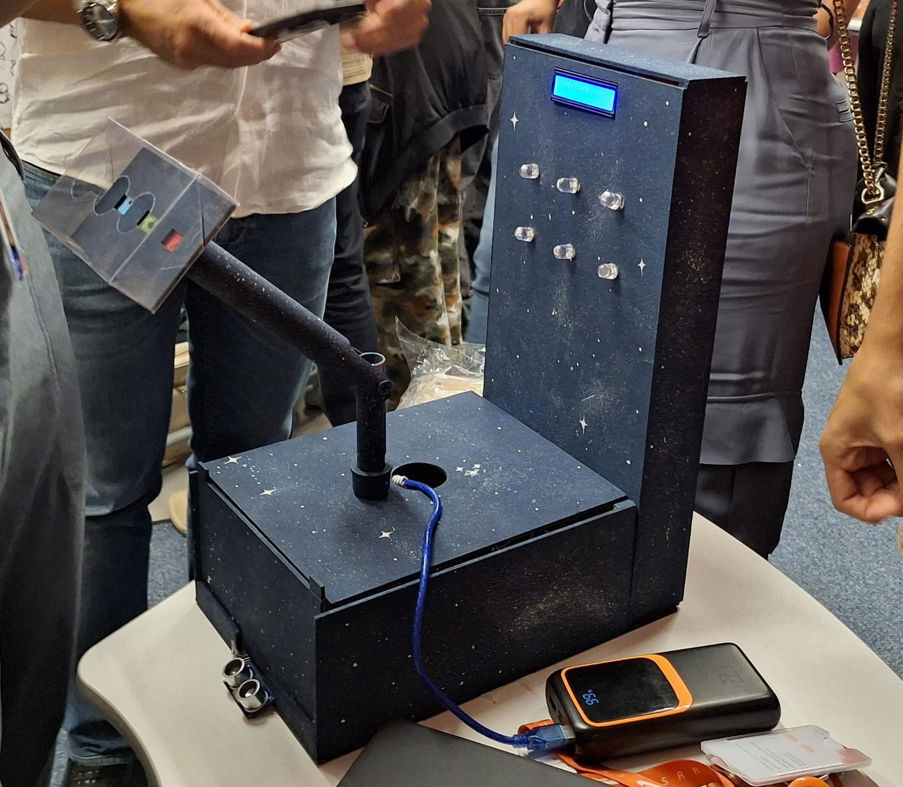
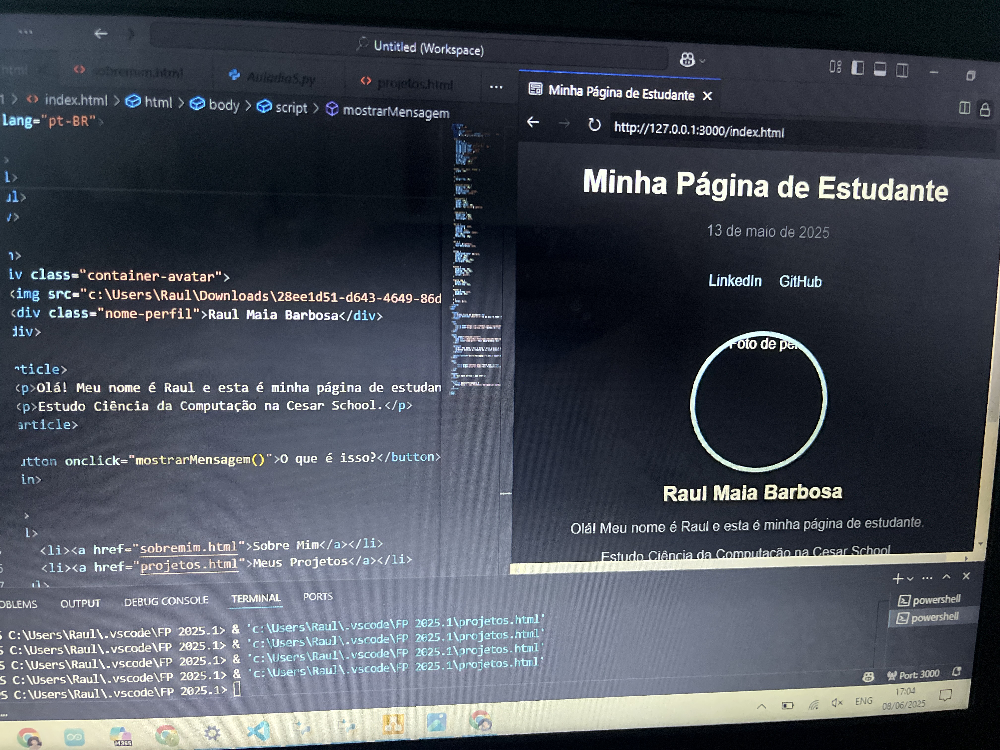

Caça às Estrelas
Este foi o projeto realizado durante o primeiro semestre com meu grupo de Projetos I. Inspirado no clássico Caça à Toupeira. Utilizamos uma mecânica que envolve LEDs, sensores de pressão, um sensor de aproximação, um display e um braço articulado para criar uma dinâmica acessível, em que o jogador assopra o sensor correspondente à cor do LED que acende, aleatoriamente, para marcar pontos no display.

Site de Portfólio
Este é o meu portfólio pessoal, construído com HTML, CSS e JavaScript, mostrando minhas habilidades aprendidas durante todo o semestre em Introdução à Computação.